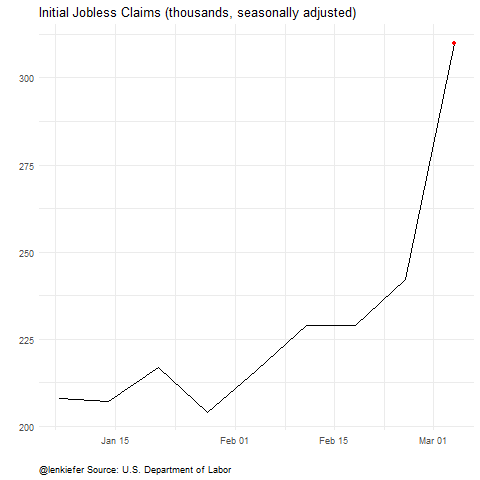

Today the U.S. Bureau of Labor Statistics released its monthly employment situation summary for March 2020. While many were expecting the U.S. labor market to show some weakness as the U.S. economy shuts down to battle COVID-19, the magnitude of the contraction surprised many. Because the reference week for the employment report was March 8th through March 14th, before the nationwide shutdown took full effect, many were expecting a relatively mild report.
Instead, we got a shock. Nonfarm payrolls, which had increased for 113 consecutive months, contracted by 701,000. And the unemployment rate increased from 3.5% in February to 4.4% in March.
With weekly initial jobless claims increasing rapidly, with over 10 million claims (on a seasonally adjusted basis) filed after the March reference week the April report will likely show significant job losses above what we saw in March.
It’s likely going to be a few tough months ahead.
Below, I share some charts on the labor market, and the R code I used to generate them.
Initial Jobless Claims Animations
First, I want to share updated charts for initial jobless claims, which were over 6.6 million on a seasonally adjusted basis this week. Last week I shared code for one of these, but I augment my code with a version for the non-seasonally adjusted series, and for the claims data scales by the civilian labor force. As a percent of the labor force the 6.6 million claims was 4%.
As I pointed out on Twitter (and many had also suggested when I shared the original chart), the version scales by the labor force is probably better for making comparisons over time. However, 4.4% is somewhat abstract. 6.6 million, more than the population of Missouri, might be a more salient number.
Either way the picture is pretty stark:
Animations:


Click for R code for claims animations
### Get data
We will get the data from St. Louis Fed’s Federal Reserve Economic Data (FRED). In order for the code to work you will need to get an API key.
First set libraries
#################################################
# set libraries ----
library(fredr)
library(zoo)
library(tidyverse)
library(lubridate)
library(gganimate)
################################################Then set your key.
fredr_set_key("YOUR_KEY")
# replace YOUR_KEY with the key FRED gives you#################################################
# get and wrangle data
# Seasonally adjusted weekly claims
ICSA<-
fredr(
series_id = "ICSA",
observation_start = as.Date("1967-01-01")
)
# Non seasonally adjusted weekly claims
ICNSA<-
fredr(
series_id = "ICNSA",
observation_start = as.Date("1967-01-01")
)
# Monthly US Labor Force (Seasonally Adjusted)
CLF16OV <-
fredr(
series_id = "CLF16OV",
observation_start = as.Date("1967-01-01")
)
# Monthly Nonfarm Payroll employment (seasonally adjusted)
# used later
PAYEMS<-
fredr(
series_id = "PAYEMS",
observation_start = as.Date("1948-01-01")
)
# wrangle data ----
df <-
left_join(ICNSA %>% pivot_wider(names_from=series_id,values_from=value),
ICSA %>% pivot_wider(names_from=series_id,values_from=value),
by="date") %>%
mutate(year=year(date),month=month(date))
df2 <-
data.frame(CLF16OV %>% pivot_wider(names_from=series_id,values_from=value)) %>%
mutate(year=year(date),month=month(date)) %>%
select(-date)
# merge monthly labor force stats with weekly claims data by year and month
# we could refine the interpolation, but it won't matter for the big picture
df3 <- left_join(df, df2, by=c("year","month")) %>%
mutate(ind=row_number(),
ratioSA=ICSA/CLF16OV/1000,
ratioNSA=ICNSA/CLF16OV/1000) %>%
# add some dramatic pauses for the animation in the last 2 weeks
mutate(ind=ifelse(date=="2020-03-21", ind+1200,ind)) %>%
mutate(ind=ifelse(date==max(date),ind+2500,ind))With the data you can make and save your animations:
a <-
ggplot(data=df3, aes(x=date,y=ICSA/1000))+geom_line()+
view_follow()+
geom_point(color="red")+
transition_reveal(ind)+
theme_minimal()+
theme(plot.caption=element_text(hjust=0))+
labs(x="",y="",title="Initial Jobless Claims (thousands, seasonally adjusted)",
caption="@lenkiefer Source: U.S. Department of Labor")
animate(a,end_pause=25, nframes=350,fps=12)
save_animation(last_animation(), file="PATH_FOR_GIF1")
a2 <-
ggplot(data=df3, aes(x=date,y=ICNSA/1000))+geom_line()+
view_follow()+
geom_point(color="red")+
transition_reveal(ind)+
theme_minimal()+
theme(plot.caption=element_text(hjust=0))+
labs(x="",y="",title="Initial Jobless Claims (thousands, not seasonally adjusted)",
caption="@lenkiefer Source: U.S. Department of Labor")
animate(a2,end_pause=25, nframes=350,fps=12)
save_animation(last_animation(), file="PATH_FOR_GIF2")
a3 <-
ggplot(data=df3, aes(x=date,y=ratioSA ))+geom_line()+
view_follow()+
geom_point(color="red")+
scale_y_continuous(labels=scales::percent)+
transition_reveal(ind)+
theme_minimal()+
theme(plot.caption=element_text(hjust=0))+
labs(x="",y="",
title="Initial Jobless Claims as a % of Labor Force (seasonally adjusted)",
caption="@lenkiefer Source: U.S. Department of Labor")
animate(a3,end_pause=25, nframes=350,fps=12)
save_animation(last_animation(), file="PATH_FOR_GIF3")Payroll employment falls 701,000
Many smart analysts knew that these last two weeks of claims covered weeks after the reference week, so today’s employment situation was likely to understate the magnitude of job losses. Consensus forecasts were for employment to contract 100,000 in March. That would still be very bad, and break string of 113 consecutive months of job gains. Instead employment fell by 701,000. That is the sharpest decline since March of 2009, when we lost 800,000 jobs.
After the Great Recession I used to think we would use fractional multipliers to describe future events. Something like 0.1x, 0.2x, where X was the indicator in the Great Recession. Right now it looks like we might need to use whole number multipliers, 1x, 2x, etc. Hopefully we’ll be able to apply those same multipliers once we start to recover.
Stay safe out there.
Click for R code for employment chart
# Make employment dataviz
# see: http://lenkiefer.com/2018/03/11/charting-jobs-friday-with-r/
df4 <- PAYEMS %>%
mutate(ind=ifelse(date==max(date),date+2500,date)) %>%
mutate(dj=value-lag(value))
ggplot(data=filter(df2,year(date)>1949),
aes(x=date,y=dj,
color=ifelse(dj>0,"up m/m",
ifelse(dj==0,"no change", "down m/m")),
fill=ifelse(dj>0,"up m/m",
ifelse(dj==0,"no change", "down m/m"))))+
geom_col(alpha=0.85,color=NA)+
geom_point(data= .%>% filter(date==max(date)),size=6,alpha=0.25)+
geom_text(data= .%>% filter(date==max(date)),aes(label=round(dj)),nudge_y=-80,size=5,fontfacet="bold",alpha=0.85)+
scale_y_continuous(labels=scales::comma,sec.axis=dup_axis())+
theme_minimal()+
scale_color_manual(values=c("#d73027","gray","#4575b4"),
name="Monthly change")+
scale_fill_manual(values=c("#d73027","gray","#4575b4"),
name="Monthly change")+
geom_rug(sides="b")+
scale_x_date(lim=as.Date(c("1950-01-01","2020-12-31")),date_breaks="5 years",date_labels="%Y")+
theme(legend.position="none",
plot.caption=element_text(hjust=0),
plot.subtitle=element_text(size=14,face="italic",color="darkgray"),
plot.title=element_text(size=14,face="bold",color="black"))+
labs(x="",y="",
title="After 113 consecutive months of positive month-over-month job growth\nemployment contracts 701,000 in March 2020",
subtitle="Monthly change in U.S. nonfarm employment (1000s, SA)",
caption="@lenkiefer Source: U.S. Bureau of Labor Statistics blue (red) ticks indicates month when employment increased (decreased)")